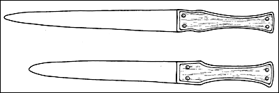
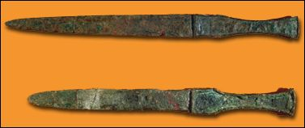

The Challenge -
Daggers


Metal was an expensive material, especially in Babylonia and so when weapons or tools were damaged or old they were often melted down for reuse. Metal objects are therefore exciting finds for any archaeologist digging in Mesopotamia. When they are found, metal objects are usually very decayed. These daggers are typical of those used by soldiers in Mesopotamia around 1000 B.C. Archaeologists have been able to date them because of their design.
|
|